Five separate projects. The thread is how I work on every one of them.
A clinic's paper notebook, turned into a booking system live in multiple clinics.
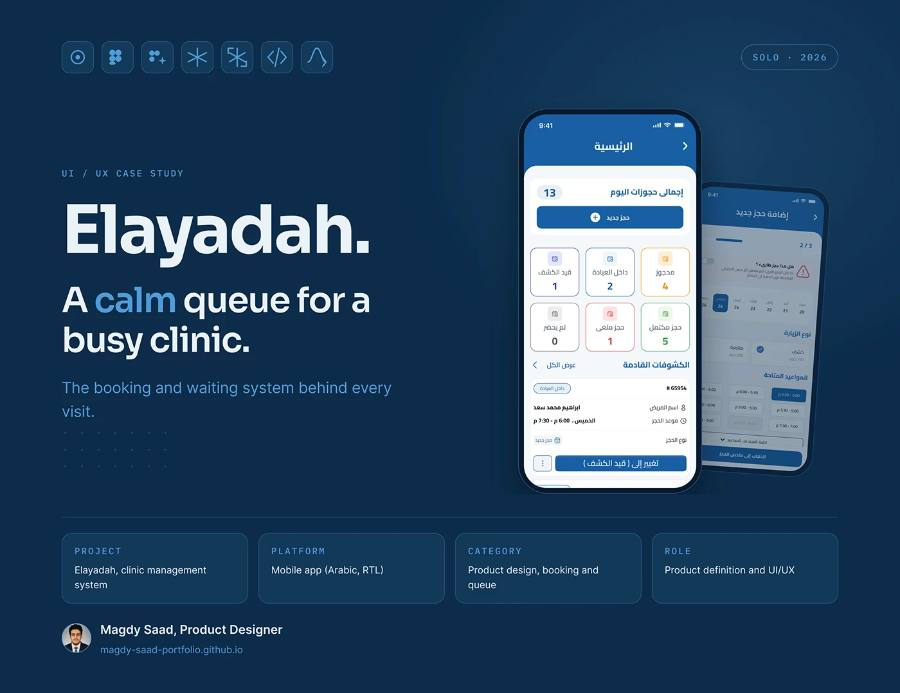
Patients travelled to the clinic just to book, then found the slots gone. I mapped the paper workflow with the doctor and designed online, phone and walk-in booking on live availability, with emergency priority in the queue.
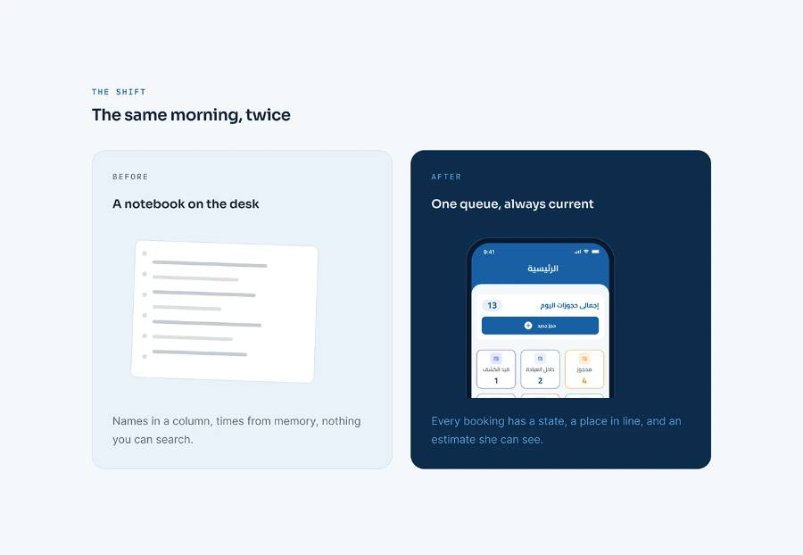
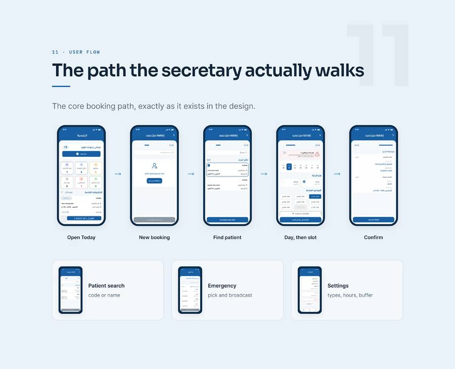
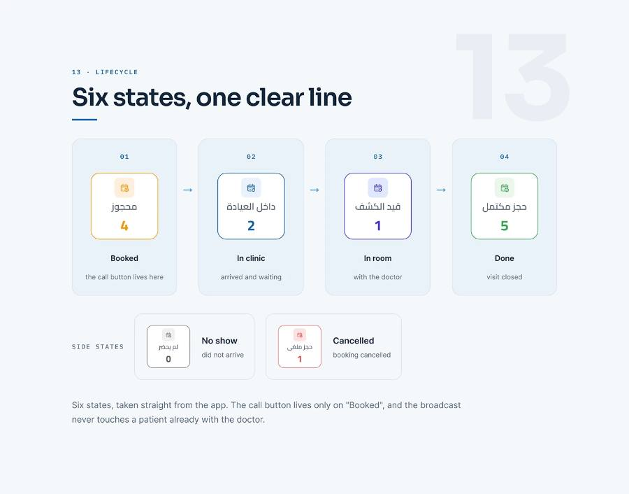
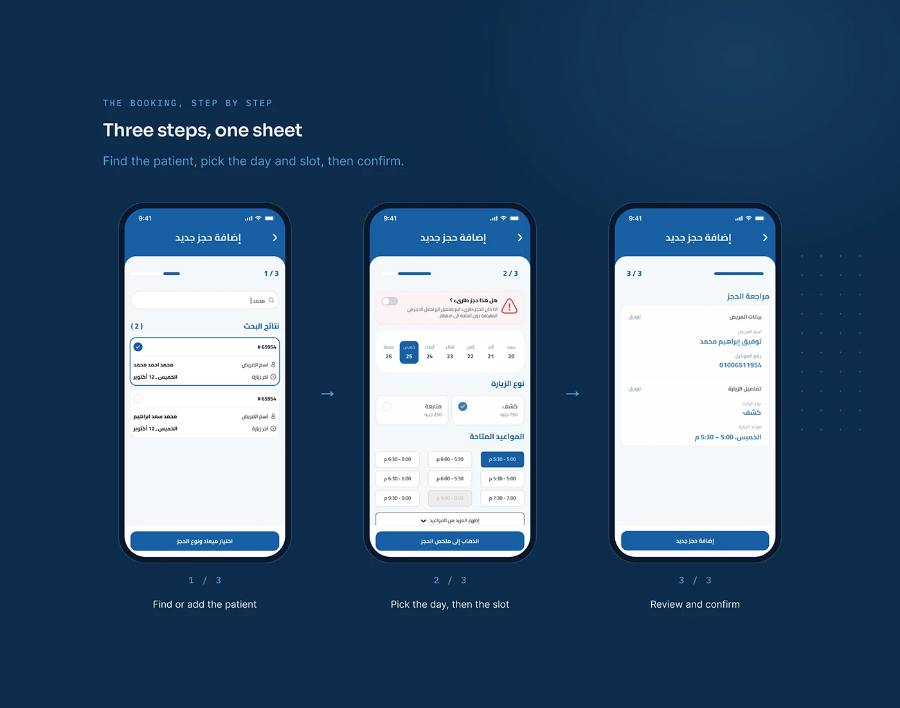
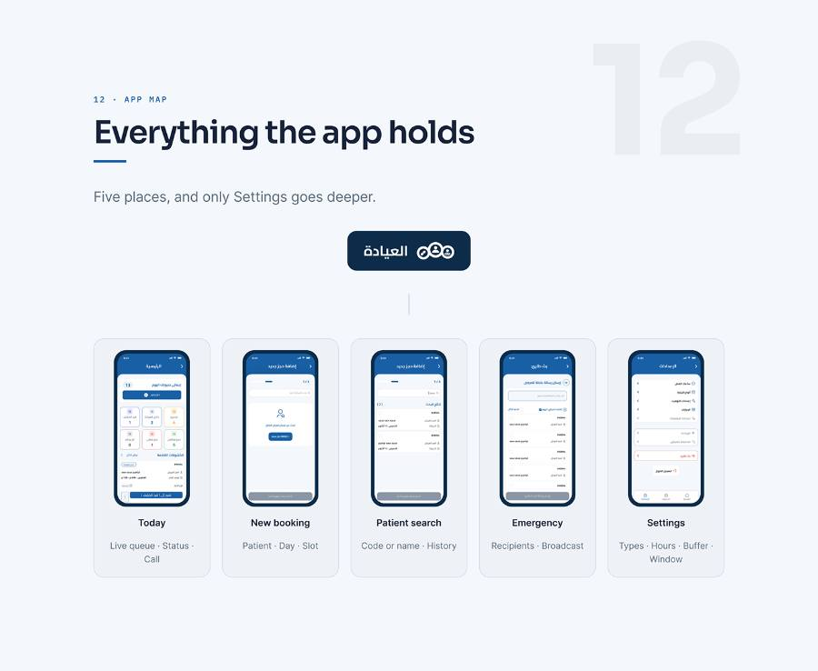
Keep scrolling to move through the screens.
One source of tokens for two languages, two themes and every page.
For Gathern's booking website we built a foundation, not a redesign: Arabic and English, light and dark, all from one set of tokens and components.
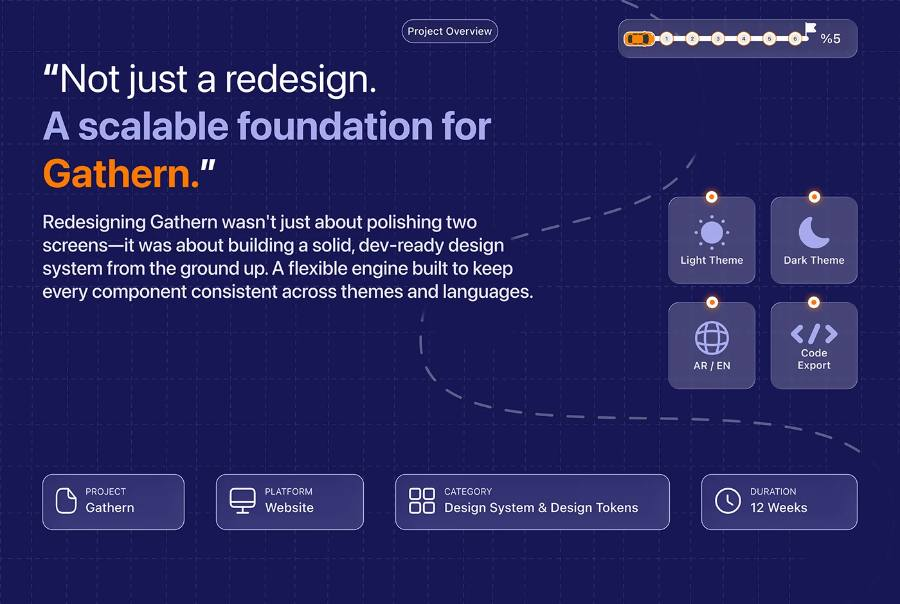
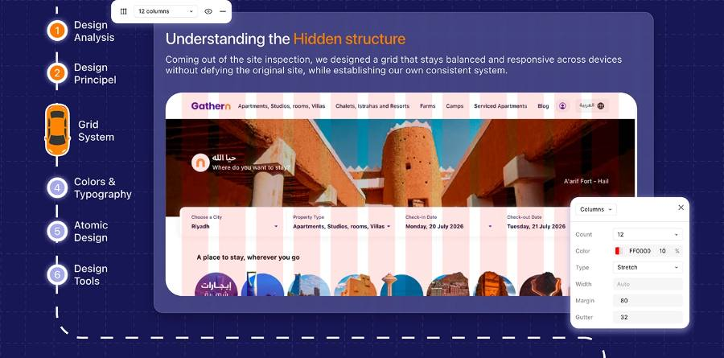
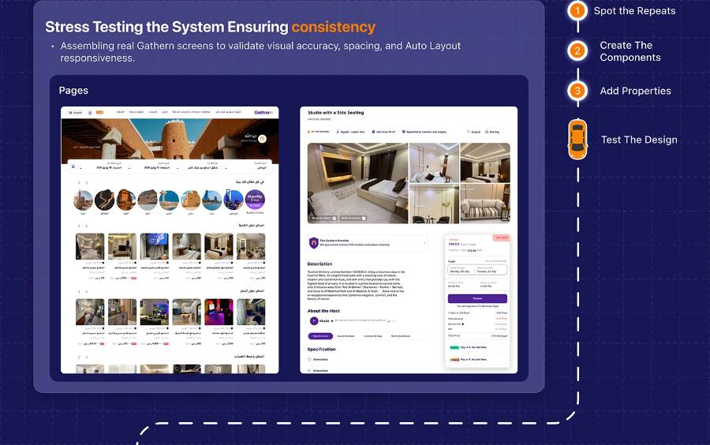
Decisions made once, so no screen has to make them again.
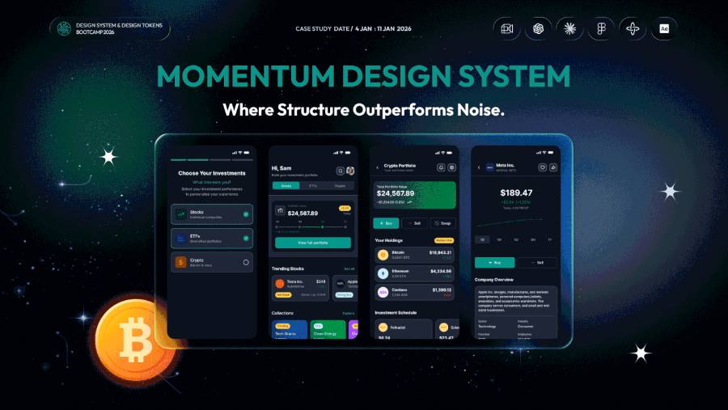
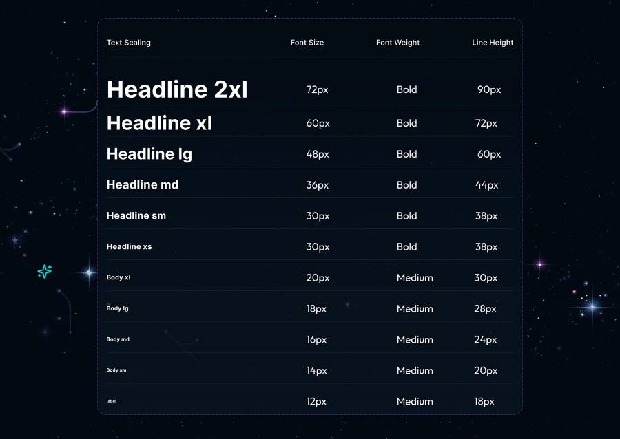
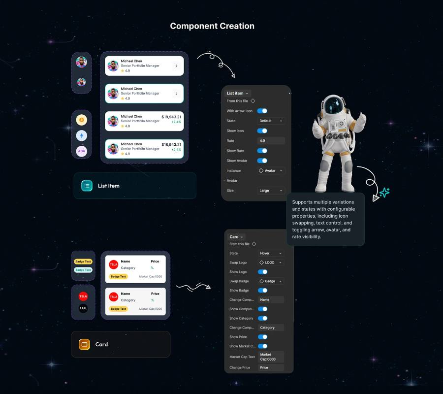
For a stock trading app we co-designed tokens, variables and components. I then built its live documentation site on my own, with search and a page for every component.
A design system that AI agents can read, follow and check.
Tokens stay the single source of truth. Each Figma component is linked to its code with Code Connect, and the docs are written for agents as well as people, so agents build on-system screens and flag drift. It's the system I used to ship Elayadah.
Before any screen, we asked 20+ people how they buy used cars online.
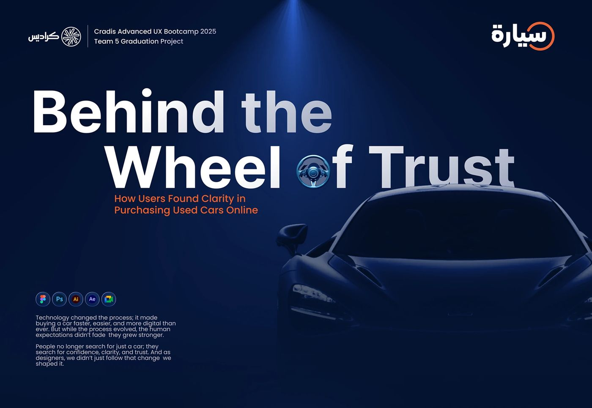
Buyers didn't lack listings, they lacked trust. We turned the interviews into flows, information architecture and wireframes built around clarity.
Several of our proposed solutions later appeared in the live Syarah app.
Read the case study